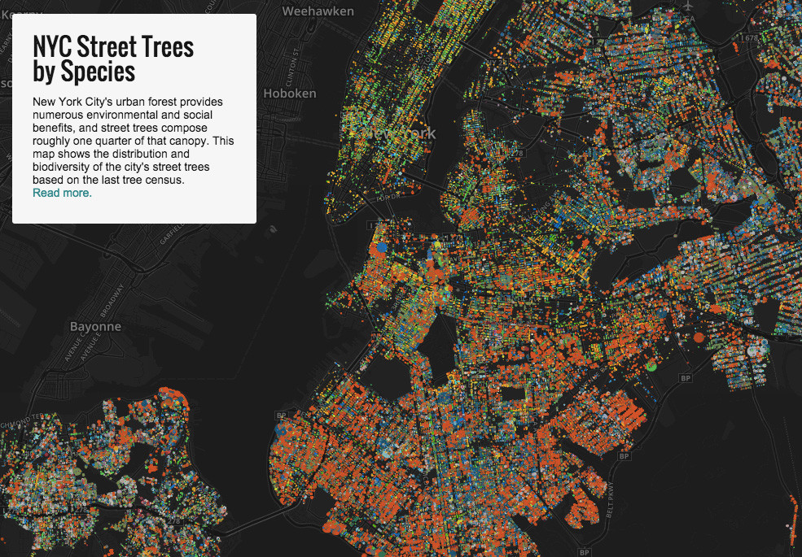
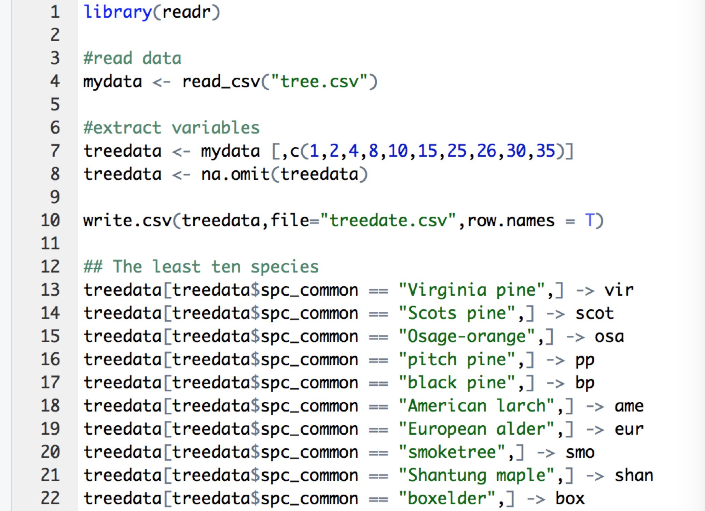
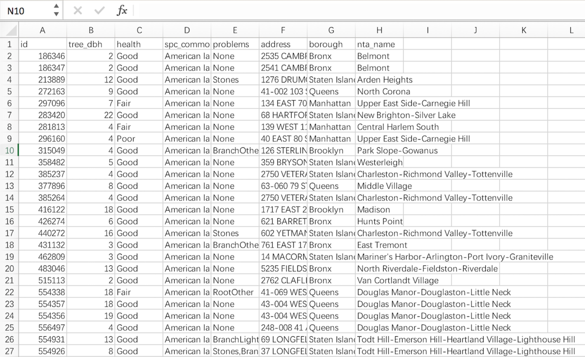
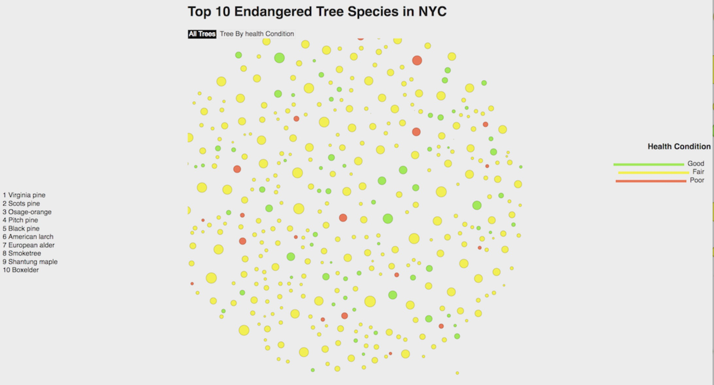
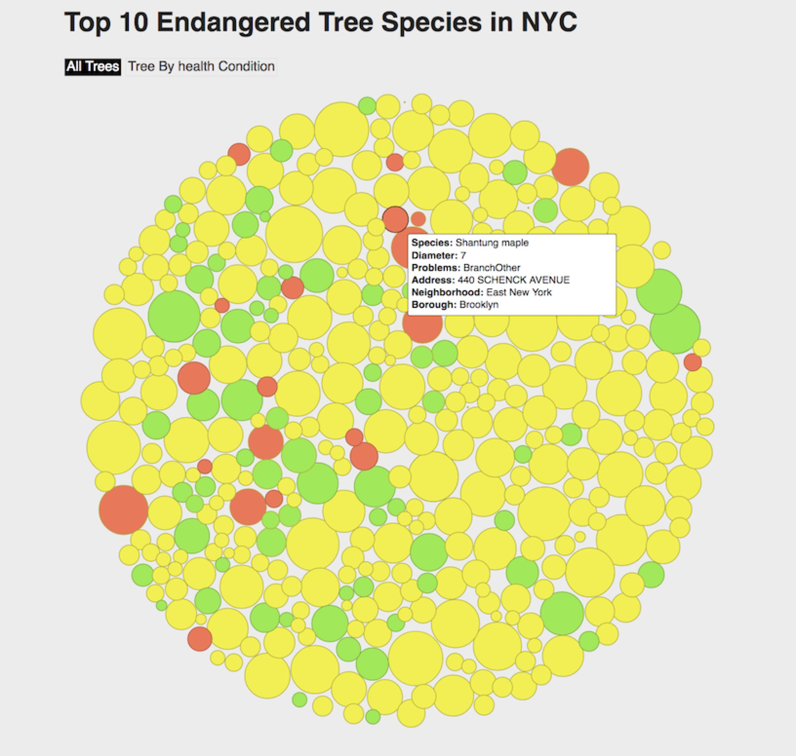

Introduction
My project is concerned about the growth of trees for top 10 endangered species in NYC.The tree is our silent friend. Its ecological and landscape functions bring us irreplaceable benefits. It is praised as a living infrastructure. In the process of growth, it will be affected by extreme weather, human damage and its own diseases and other effects will result in the decline of growth potential. Therefore, I pay more attention to their individual growth status than the distribution of tree species as shown in Jill Hubley's project.

Initial Proposal
According to New York City Parks, 680,621 trees are mapped on Street Tree Map (NYC Parks). The number of species is up to 298 and the most common one is London Planetree. Trees are protecting our ecological environment, but many people may not be aware of them. Those benefits of street trees include but not limited to stormwater interception, energy conservation, air pollution mitigation, and carbon dioxide reduction. Perhaps it’s time to let people know more about their friends on streets. The demographic pattern can tell a lot about what we missed in the past and what we can do in the future. Therefore, I am interested in collect trees statistics in NYC and be able to categorize them through different aspects, such as age, species, boroughs, diseases, etc. However, laterly I found that those this format of visulaization may overrepresent the generalization of tree characters. We only know them as a group but not individual.
Three Sketches for Initial Proposal
Data
All data are from 2015 Stree Tree Census, which is provided by NYC Open Data. I cleaned and processed data through R and extract variables for 10 most endangered tree species as my sample. They are listed in ascending order in terms of quantity - Virginia pine, Scots pine, Osage-orange, pitch pine, black pine, American larch, European alder, Smoketree, Shantung maple, boxelder. Since those species rarely remains in NYC's tree system, I would like to investigate their health condition and problems that may cause vulnerability. 
Design
The overall shape is like a tree ring. The size of each circle was calculated by the diameter of the tree. Different color represented different health conditions: "good" is green, "fair" is yellow, and "poor" is red. Detailed profile for each tree displays along with the mouse.
 
Check the Final Interative Bubble Chart
Findings and Conclusion
Most of the 10 endangered species get ill from an early age (relatively smaller diameters). Problems are human damages that vaires in different aspects: stones, branchlights, trunk, etc. Disease are not reported in the dataset. This gives me an inspiration: While paying attention to the current status of the trees, we will immprove the understanding of their growing process, thereby developing appropriate conservation management measures, and strengthening the disease resistance of trees especally for those endangered species. The future approach could be expanded to why those species are more likely to die out from NYC's street tree system. Is it because of natural factors or human intervention? Intergration on different dataset and measures would provide new dimension of comparative study.